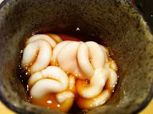

Visiting Planet Glorp
Everything you need to know
How to get to Planet Glorp
- Leave earth via rocket
- Take a left at Jupiter
- Continue straight for another 35 lightyears
- Arrive at your destination, Planet Glorp!

What to bring to Planet Glorp
- Human food and drinking water (the glorpians eat a linoleum-based diet)
- Your translator device* (duh, they don't speak English over there)
- Fuel for the journey home (Gas prices are ridiculous on Planet Glorp)

*translator device
Why you should visit Planet Glorp
- Its the closest inhabited planet to Earth!
- The Glorpians are very kind and welcoming.
- The food is amazing.

A traditional Glorpian dish